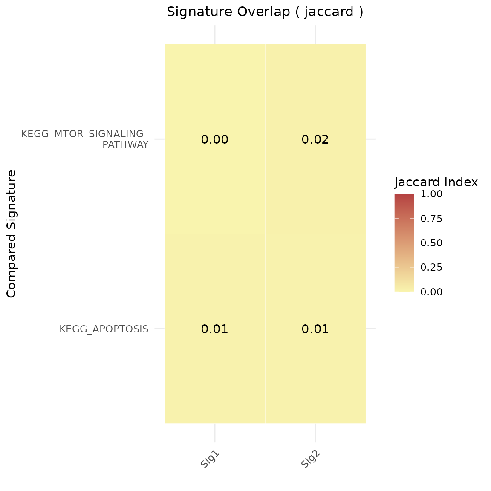

Gene Set Similarity Tutorial
Source:vignettes/Tutorial_GeneSetSimilarity.Rmd
Tutorial_GeneSetSimilarity.RmdInstallation
The user can install the development version of markeR from GitHub with:
# install.packages("devtools")
devtools::install_github("DiseaseTranscriptomicsLab/markeR")Signature Similarity
Even if a user-defined gene signature demonstrates strong
discriminatory power between conditions, it may reflect known biological
pathways rather than novel mechanisms. To address this, the
geneset_similarity() function computes pairwise
Jaccard indices or log odds ratios
(logOR) between user-provided gene signatures and a reference
set, quantifying their overlap as a percentage or a statistical
enrichment.
Users can compare their signatures to:
-
Custom gene sets, defined manually, or
-
MSigDB collections, via the
msigdbrpackage.
The function provides options to:
- Filter by Jaccard index threshold, using
jaccard_threshold
- Filter by odds ratio and p-value, using
or_thresholdandpval_threshold
- Limit the number of top-matching reference signatures shown, using
num_sigs_toplot
Similarity via Jaccard Index
The Jaccard index measures raw set overlap:
Example 1: Compare against user-defined and MSigDB gene sets
# Example data
signature1 <- c("TP53", "BRCA1", "MYC", "EGFR", "CDK2")
signature2 <- c("ATXN2", "FUS", "MTOR", "CASP3")
signature_list <- list(
"User_Apoptosis" = c("TP53", "CASP3", "BAX"),
"User_CellCycle" = c("CDK2", "CDK4", "CCNB1", "MYC"),
"User_DNARepair" = c("BRCA1", "RAD51", "ATM"),
"User_MTOR" = c("MTOR", "AKT1", "RPS6KB1")
)
geneset_similarity(
signatures = list(Sig1 = signature1, Sig2 = signature2),
other_user_signatures = signature_list,
collection = "C2",
subcollection = "CP:KEGG_LEGACY",
num_sigs_toplot = NULL,
jaccard_threshold = 0.05,
msig_subset = NULL,
metric = "jaccard"
)Example 2: Restrict comparison to a custom subset of MSigDB
geneset_similarity(
signatures = list(Sig1 = signature1, Sig2 = signature2),
other_user_signatures = NULL,
collection = "C2",
subcollection = "CP:KEGG_LEGACY",
num_sigs_toplot = NULL,
jaccard_threshold = 0,
msig_subset = c("KEGG_MTOR_SIGNALING_PATHWAY", "KEGG_APOPTOSIS", "NON_EXISTENT_PATHWAY"),
metric = "jaccard"
)
Similarity via Log Odds Ratio
The log odds ratio (logOR) provides a statistically grounded alternative for assessing gene set similarity. It measures enrichment of one set within another, relative to a defined background or gene universe, using a 2×2 contingency table and a one-sided Fisher’s exact test.
-
Log odds ratio (logOR):
Derived from contingency tables using:- Genes in both sets
- Genes in one but not the other
- Gene universe as background
Log-transformed odds ratios are visualized; statistical significance is assessed via the adjusted p-value.
Note: When using
metric = "odds_ratio", theuniverseparameter must be supplied.
Example 3: Compare against user-defined and MSigDB gene sets
# Define gene universe (e.g., genes from HPA or your dataset)
gene_universe <- unique(c(
signature1, signature2,
unlist(signature_list),
msigdbr::msigdbr(species = "Homo sapiens", category = "C2")$gene_symbol
))## Warning: The `category` argument of `msigdbr()` is deprecated as of msigdbr 10.0.0.
## ℹ Please use the `collection` argument instead.
## This warning is displayed once every 8 hours.
## Call `lifecycle::last_lifecycle_warnings()` to see where this warning was
## generated.
geneset_similarity(
signatures = list(Sig1 = signature1, Sig2 = signature2),
other_user_signatures = signature_list,
collection = "C2",
subcollection = "CP:KEGG_LEGACY",
metric = "odds_ratio",
universe = gene_universe,
or_threshold = 1,
pval_threshold = 0.05,
num_sigs_toplot = 10,
width_text=50
)